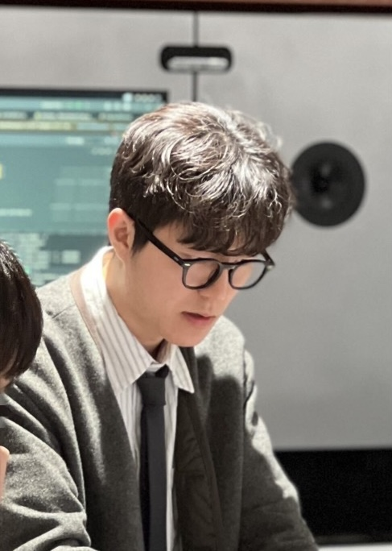

Physical AI / Robotics Engineer
실환경 로봇 시스템을 운영 가능한 지능으로 연결합니다.
Perception, multimodal orchestration, robot learning, edge deployment를 하나의 흐름으로 설계하고 검증해 온 AI 시스템 엔지니어 김준호입니다.

Positioning
로봇 지능을 실제 운영 조건에 맞게 설계합니다.
Physical AI
ROS2 기반 시스템 통합, 리더-팔로워 원격 조종, Isaac Sim 기반 RL/IL, Sim-to-Real 검증을 실제 로봇 동작 평가와 연결합니다.
AI System
이기종 비동기 입력을 공통 상태 표현으로 정합하고, Safety Supervisor, Constraint Gate, fallback 구조로 운영 리스크를 제어합니다.
Vision AI / VLM
Depth estimation, 3D occupancy, anomaly detection, auto-labeling, VLM fine-tuning을 로봇 perception 파이프라인으로 묶습니다.
Featured Projects
대표 프로젝트
멀티모달 로봇 인텔리전스 오케스트레이션
RealSense, gripper RGB, 주문, 기기, 로봇 상태를 ROS2 State Builder로 통합하고 Heuristic, VLA, RL/IL executor를 분리한 안전 실행 구조를 설계했습니다.
- Qwen 3.0 VL fine-tuning, vLLM + AWQ-4bit, Jetson Orin NX 운영 환경 적용
- Safety Supervisor / Constraint Gate / replay regression testing 기반 검증 루프 구축
- 예외 자동 복구율 85%, 장애 복구 시간 40% 단축
로봇 카페 Perception 통합
하이앵글 및 BEV 멀티뷰 수집, SAM3 / Depth Anything 기반 auto-labeling, 24-slot occupancy 판단 로직을 실매장 조건에 맞게 통합했습니다.
- MDE relative depth와 RealSense absolute scale 융합 보정 파이프라인 설계
- HDBSCAN + 3D Bounding Box + temporal smoothing으로 반사와 가림 오검출 저감
- 오검출률 15%에서 2%로 개선, 제조 완료 및 고객 픽업 판정 50ms 달성
Leader-Follower Teleoperation & Isaac Sim RL/IL
Dynamixel 기반 리더-팔로워 셋업으로 6-DoF trajectory, action, sensor data를 수집하고 Isaac Sim 기반 학습 루프와 실기기 검증 기준을 구성했습니다.
- 시점, 조명, 마찰력 domain randomization과 sensor-noise calibration 적용
- success rate, execution time, quality deviation 기준의 반복 검증 루프 운영
- 실기기 드립 동작 성공률 92%, 평균 수행 시간 45초 달성
Experience
경력과 학력
XYZ Corp. · Robot Intelligence Team Researcher
실서비스형 로봇 지능 시스템에서 perception, multimodal orchestration, teleoperation, RL/IL, edge deployment, 운영 검증 체계를 개발했습니다.
POSTECH Artificial Intelligence Institute · Intern Researcher
족적 및 타이어 자국 이미지의 전처리 파이프라인을 설계하고 PSNR / SSIM 기준의 재현 가능한 비교 실험 체계를 구축했습니다.
한양대학교 전기공학부 학사
Electrical Engineering 기반 위에 AI, robotics, data system 역량을 확장했습니다.
Skills
기술 스택
Robotics / Simulation
ROS2, Isaac Sim, Dynamixel, Leader-Follower teleoperation, RL/IL, Sim-to-Real validation
Vision / VLM / Learning
Qwen 3.0 VL, DepthAnythingV2, PromptDepth, SAM3, Efficient-AD, HDBSCAN, SLAM3R, PyTorch
Data / Infra / Deployment
Jetson Orin NX, TensorRT, vLLM, AWQ-4bit, Docker, RealSense, replay evaluation, Python
PM / Analysis
Problem definition, system design, operational validation, metric design, SQL, Tableau
Contact